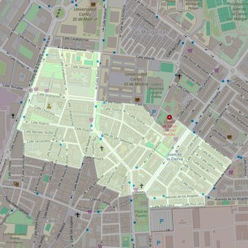

San Sebastián
- Arciprestazgo
- Getafe
- Población
- Getafe
- Dirección postal
- Pza. San Sebastián, 1
- Código postal
- 28902
- Extensión
- 0,49 km² (49 ha)
- Teléfono
- 916 846 607
- Correo electrónico
- sansebastian-getafe@diocesisgetafe.es
- Información demográfica
- De la parroquia · De la población (Getafe) · Del arciprestazgo (Getafe)


Descargar mapaLímites según decreto
“Partiendo de la confluencia de las calles Madrid y General Castaños, arrancan, en dirección noroeste, por el eje de la calle General Castaños; continúan por el eje de la calle Jacinto Benavente, en dirección noroeste, hasta el ferrocarril Madrid-Badajoz; siguen por el eje de las vías del ferrocarril (en dirección noreste), por el eje de la calle Magallanes (en dirección este), por el eje de la calle Madrid (en dirección sur), por el eje de la calle Daoíz (en dirección este y sureste), por el eje de la calle Dr. Marañón (en dirección sureste), por el eje de la calle Cataluña (en dirección noreste), por los ejes de las calles Gerona y Alicante (en dirección sureste), por el eje de la Avenida de Aragón (en dirección suroeste), por el eje de la calle Plus Ultra (en dirección oeste); pasan por la calle Comadrona Asunción Fernández (en dirección norte), la plaza de España (que no queda incluida) y por la Avenida Juan de la Cierva enlazan con la calle Perales; siguen por el eje de la calle Perales (en dirección suroeste), por el eje de la calle Los Angeles (en dirección noroeste), por el eje de la calle Villaverde (en dirección noroeste), por el eje de la calle Los Huertos (en dirección noroeste), por el eje de la calle Vinagre (en dirección este), por el eje de la calle Madrid (en dirección suroeste) hasta la confluencia con la calle General Castaños, punto de partida.” (Decreto del 17 de febrero de 1998; B-O Mar-98)
Desarrollos urbanísticos previstos
- Getafe: viviendas públicas de la EMSV en El Rosón: 203 viviendas · en tramitación o en licitación
Las cifras y sus fuentes están en la ficha de cada desarrollo, en la sección «Previsión de desarrollos urbanísticos».